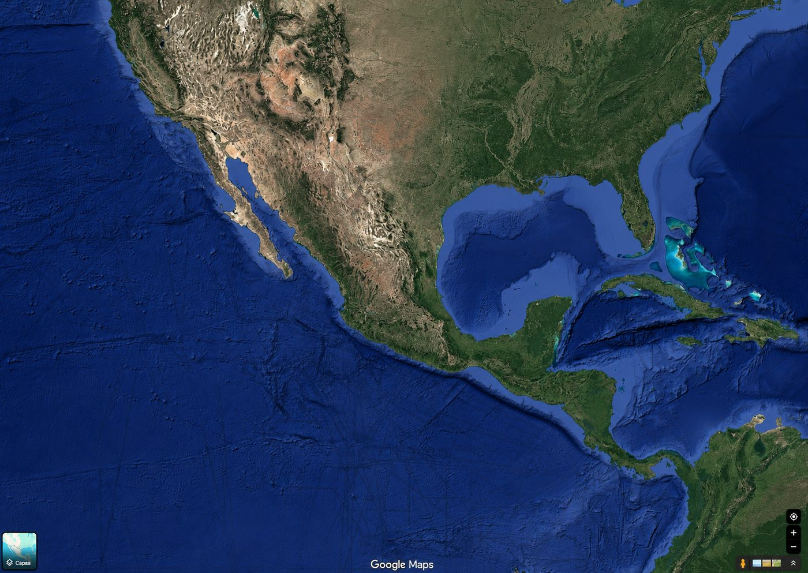

Tiempo para impactar en Hogar
0:00:10 Seg.
Cuenta regresiva al impacto
Sabes cuántos segundos tienes.
No solo "está temblando": un contador te dice cuánto falta para que la sacudida llegue a tu ubicación, para que uses cada segundo en ponerte a salvo.